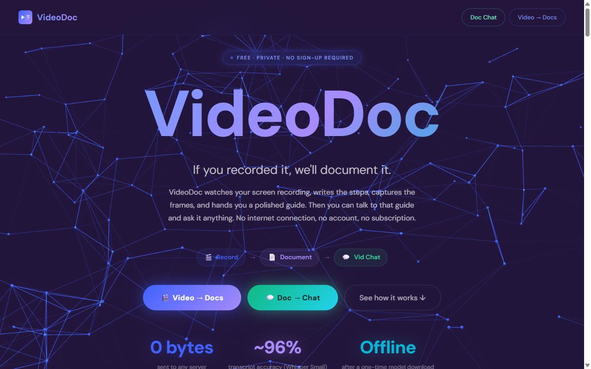
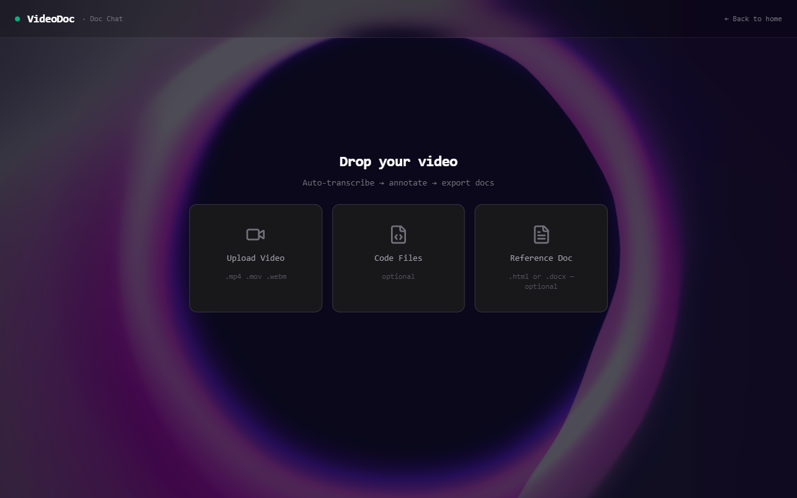

1 Open VideoDocThe home screen

The VideoDoc home page
→Click “Video → Docs” to begin. (The other button, “Doc → Chat”, lets you ask questions about a finished guide.)
Under the hood: a static React + Vite app. The badges at the bottom — 0 bytes uploaded · ~96% · Offline — reflect that everything runs in your browser; no server, no account.
2 Add your videoDrag & drop, or click to pick a file

Drop your video here — code files & a reference doc are optional
→Drop your screen recording onto “Upload Video” (.mp4, .mov, .webm). The other two boxes are optional and most people skip them.
Under the hood: the file never leaves your machine. The video is read locally to pull out frames and the audio track.
3 It reads your videoAutomatic — just wait
✓Extract Frames88 frames
✓Extract Audio16kHz mono
✓Transcribe Audio48 segments
●Read Screen (OCR)reading text…
Overall progress only moves forward — it never jumps backward.
→Nothing to do here — grab a coffee. VideoDoc pulls out screenshots, cleans the audio, writes the transcript, and reads the on-screen text.
Under the hood: frame sampling adapts to video length; audio is denoised before Whisper transcribes it; Tesseract OCR reads the actual UI text so the AI names buttons correctly.
4 Choose the AI & accuracy optionsThe “Configure Annotation” window
AI BACKEND
👁️Built-in AI (gemma3) · Recommended
Runs inside the app — best accuracy, fully offline.
🌐 WebLLM
Runs in browser. First run downloads a model.
🖥️ Ollama
Uses your local Ollama models.
⚡ Test my system → picks the best model your computer can run
ACCURACY
Self-verify each step
AI re-checks every step against the screen — far fewer made-up steps.
Consolidate procedure
Tidies titles & merges duplicates into one clean guide.
→Most people: leave everything as-is and click “Generate Procedure”. The two green switches (Self-verify & Consolidate) are ON by default for the best quality.
Under the hood: three engines share one code path. Built-in (gemma3) appears only in the desktop app. “Test my system” probes your GPU/RAM and auto-selects a model that fits — and warns in plain English if you pick one too heavy.
5 It writes the stepsThe AI annotation pass
✓Load AI Modelgemma3 · 👁 vision
●Write Procedure Steps14 / 22
○Self-Verify Steps
○Consolidate Procedure
○Purpose · Summary · FAQ · Flow
→Still hands-off. You can watch each step appear. This is the slow part — bigger/clearer videos take longer.
Under the hood: the recording is split into time windows; each is grounded to the real app (identified once from the screen, never guessed) + the on-screen text, then written, fact-checked, and merged. Meeting chatter (“you’re muted”) and risky mis-hearings are filtered out automatically.
6 Review & fix anythingYou don’t need to know HTML — just click and type
PROCEDURE STEPS · tap any step to edit⚠ 3 to verify
Open the BW analysis
1. Go to the Analysis tab 2. Select the R&D query
Check these short codes / acronyms — fix once, it changes everywhere
BW×4
Business Warehouse
Replace all
Click any highlighted code (like BW) — VideoDoc flags acronyms it isn’t sure about so you can confirm them.
Type the correct meaning and hit “Replace all” — it fixes that word across the whole document at once.
Click “✎ Edit” on any step to change the title, add or remove actions, or fix wording.
→This is your safety net: the AI gives you a draft, you fix the few highlighted bits in a minute — no HTML, no formatting, just click and type.
Under the hood: edits update the document in place, so the export always reflects your changes. Acronyms are detected and de-duplicated; one correction is a whole-document find-and-replace.
7 Export your guideOne click — pick a format
⬇ PDF
⬇ HTML
⬇ Word (.docx)
→Choose PDF to share, HTML for a clickable web guide, or Word to keep editing in Office. Your screenshots are embedded automatically.
Under the hood: the export is generated locally from your (edited) steps + insights — a styled, printable document with each step’s screenshot, a summary, FAQ and a flow diagram.
🔒 Your data never leaves your computer
Everything above happens on your own machine. There is no cloud, no account, no upload.
| When | What happens | Data leaves? |
|---|
| Making the guide | Runs on your computer | No — fully local |
| First-time model download | A model file comes to you (once) | No |